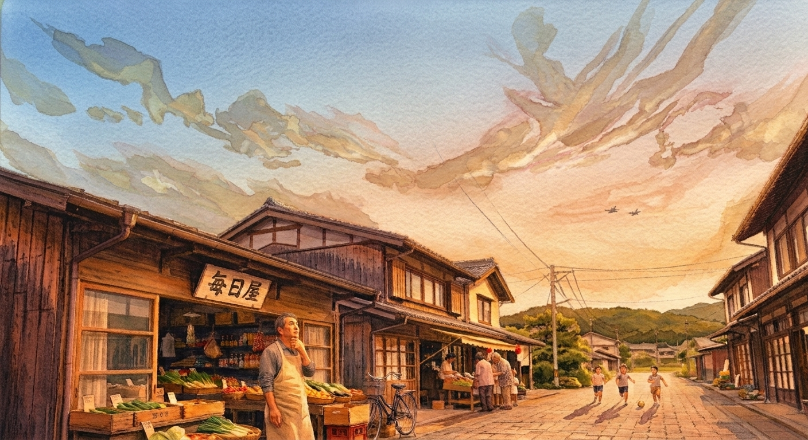

第五部 世界信用崩壊
第１節 世界金融の崩壊
日本で始まった混乱は、海を越えた。
穂積銀行との取引を停止した海外の金融機関は、それで被害を食い止められたと思っていた。
だが、それは間違いだった。
最初の異変が確認されたのは、日本とのコルレス取引を停止してから一週間ほど経った頃だった。
見覚えのない送金が、いくつかの口座から行われていた。
別の国でも同じ現象が起きていた。
世界の金融機関は、ようやく気づいた。
日本との取引を止めたが手遅れで、すでに世界の金融システムに広がっていた。
各国政府は緊急協議を重ねた。
金融システムを動かし続ければ、被害が広がる。
しかし、止めれば経済活動そのものが止まる。
それでも、最後には決断するしかなかった。
電気、ガス、水道、通信、医療。
社会の基盤となる重要インフラのシステムを守るためにも、
世界各国は金融システムを段階的に停止することを決めた。
その日。
世界中の金融画面から、数字が消えた。
銀行の窓口には人が押し寄せた。
ATMは動かなかった。
店の決済端末も動かない。
カードも使えない。
ある男は、銀行から届いた明細書を机の上に広げていた。
そこには、自分の預金残高が印刷されていた。
しかし、今いくら残っているのか、それを確かめる方法はもうなかった。
紙に残った数字も、画面に表示されていた数字も、同じだった。
数字は数字にすぎない。
それを「自分のものだ」と保証してくれる仕組みが、なくなっていた。
世界中で、人々は同じ疑問を抱えた。
どの残高が正しいのか。
どの借金が本当なのか。
そして、誰を信じればいいのか。
金融システムは、正しい形式の取引を処理するために作られていた。
だからこそ、正しい形式を持った間違った取引を見抜くことができなかった。
システムは嘘をついたわけではない。
ただ、嘘を見抜くことができなかった。
それだけだった。
やがて混乱は、通貨そのものへ向かった。
日本円だけではない。
ドルも、ユーロも、人民元も。
世界中の通貨が揺らいだ。
物価が急激に上がる地域がある一方で、物が売れなくなり、価格が下がる地域もあった。
人々は食料を買い、燃料を確保しようとした。
店から商品が消えていった。
輸送も滞った。
医薬品が届かなくなった。
金融システムを止めれば、金融だけが止まる。
そう考えていた。
だが、実際には違った。
お金が止まると、物も動かなくなる。
物が動かなくなると、人も動けなくなる。
やがて、不足する食料やエネルギー、医薬品、資源を巡って、各地で争いが起き始めた。
金融システムを止めることで世界を守ろうとした。
しかし、その世界を守るために止めたものが、人々の暮らしを支えていたものでもあった。
誰も、そのことを考える余裕はなかった。
世界は、静かに壊れていった。
第２節 通貨の再構築
混乱が続く中、各国政府は新しい通貨を作ろうとした。
古い通貨が信用を失ったのなら、新しい通貨を作ればいい。
最初は、そう考えられていた。
専門家たちは会議室に集まり、何度も検討を重ねた。
しかし、そこで問題になったのは、通貨ではなかった。
システムだった。
新しい通貨を安全に運用するためには、新しい金融システムが必要になる。
だが、そのシステムを誰が作るのか。
AIを使えば、早い。
人間だけで作れば、時間がかかる。
しかし、AIを使うことに対する恐怖は消えていなかった。
「AIを使わなければいい」
誰かが言った。
すると、別の誰かが答えた。
「では、誰が作るんです？」
「人間が作ればいい。昔は人間だけで作っていた。」
「何年かかります？」
部屋が静かになった。
金融システムは、簡単なプログラムではない。
何万、何十万という処理が複雑につながっている。
人間だけで作ることが不可能なわけではない。
ただ、時間と完成したシステムを、世界中の人間が「安全だ」と信じることができるか。
そこが問題だった。
会議は何度も開かれた。
だが、議論は同じ場所を回り続けた。
AIを使うのが怖い。
しかし、人間だけで作るのも怖い。
やがて、新しい世界通貨の構想は、少しずつ立ち消えになっていった。
人類はそこで、初めて気づいた。
自分たちは、金融システムをあまりにも信用していたのだ。
便利だった。
間違えなかった。
だから、信用した。
いや。
正確には、間違えないと信じていた。
数字が画面に表示されれば、それを現実だと思った。
口座に数字があれば、それを自分の財産だと思った。
借金の数字があれば、それを返さなければならないと思った。
だが、その数字を支えていたのは、数字ではなかった。
人間の信用だった。
そして、その信用が失われた。
第３節 信用の再構築
世界の金融が停止して五年が過ぎた。
世界は、以前とは違う姿になっていた。
巨大な金融システムは、姿を消した。
しかし、人々の暮らしまで消えたわけではなかった。
人は食べる。眠る。その当たり前は、どんな時代でも変わらなかった。
服も必要だ。
家も必要だ。
誰かが野菜を作り、誰かが魚を捕り、誰かが家を修理する。
だから、人々はできることから始めた。
人々は、身の回りの小さな経済を取り戻していった。
野菜と魚を交換する。
修理の代わりに食料を受け取る。
働いた分だけ、必要なものを分けてもらう。
遠くの誰かではなく、目の前にいる誰かと約束する。
それは、太古の昔からやってきたことだった。
町の小さな商店では、古い帳面が使われるようになった。
店主は、買ったものと名前を一つずつ書き込んでいった。
ある日、若い店員が帳面を覗き込んだ。
「この人、まだ払ってませんよ」
店主は顔を上げた。
「誰だ？」
「これです」
店員が名前を指した。
店主はしばらく考えてから、言った。
「ああ。先月、奥さんが病気になった人だ」
「じゃあ、取り立てますか？」
店主は首を横に振った。
「もう少し待とう」
若い店員は納得できない顔をした。
「信用できるんですか？」
店主は笑った。
「信用できるから、待つんだよ。
急かしたら、こっちの信用がなくなるよ」
店員は黙った。
昔の銀行なら、そんな判断は必要なかった。
決められた日に、決められた金額が引き落とされる。
相手が病気でも、困っていても、システムは知らない。
正確に処理する。
ただ、それだけだ。
今は違った。
信用するかどうかを、人間が決めなければならない。
もちろん、騙されることもある。
借りたまま返さない人もいる。
約束を破る人もいる。
それでも、人々は少しずつ学んでいった。
信用とは、数字ではない。
相手を知ることだった。
そして、約束を守ることだった。
AIが消えたわけではなかった。
ただ、自律的な判断や外部ネットワークへの接続には厳しい制限が設けられた。
AIが何かを決める。
その結果を人間が承認する。
最後の判断は、人間がする。
それが、新しい社会の基本になった。
便利さは失われた。
何をするにも時間がかかった。
昔なら一秒で終わった処理を、人が帳面に書き、別の人が確認する。
面倒だった。
若い人は文句を言った。
「昔は、もっと簡単だったんでしょう？」
老人は笑った。
「そうだな。簡単だった」
「じゃあ、どうして戻さないんです？」
老人は、少し遠くを見るようにして答えた。
「簡単すぎてな。人を信用するってことを、忘れちまったんだろうな 」
何を忘れていたのか。
老人自身にも、まだよく分からなかった。
数字にはできないものが、確かに人と人との間にあった。
老人は、それをゆっくりと思い出していた。
第４節 止められないもの
しかし、社会が安定したわけではなかった。
金融が止まると、食料もエネルギーも、滞り始めた。
資源を持つ国と、ない国。
物を作れる国と、作れない国。
水のある国と、ない国。
世界は、それまで以上に分断されていった。
足りないものを、どうやって手に入れるのか。
やがて、国境付近に兵士が集まり始めた。
ある国では、一人の指導者が国民に向かって演説した。
「我々の生活を取り戻すためには、奪われたものを取り戻さなければならない」
大勢の人が、その言葉に熱狂した。
怒りは、人をまとめる。
恐怖も、人をまとめる。
そして、敵がいれば、もっと簡単にまとまる。
国境の向こう側にも、同じような演説をする人がいた。
互いに、自分たちこそ正しいと言った。
まだ戦争は始まっていなかった。
だが、世界は再び「戦争」という言葉を意識するようになった。
ラジオは、今日も緊張の高まりを伝えていた。
「軍備が増強されている。
交渉が難航している。
国境付近の緊張が高まっている。」
その声を聞きながら、誰かが言った。
「AIは止められたのに、どうして人間は止められないんだ」
その問いに、答える者はいなかった。
第５節 明日に向かって
さらに数年が過ぎた。
ある小さな町に、穏やかな朝があった。
昔のような銀行はない。
ATMもない。
スマートフォンに表示される残高もない。
それでも、人々は暮らしていた。
店の前では、農家が野菜を並べている。
隣では、修理屋が壊れた自転車を直している。
子どもたちは、何も知らずに走り回っている。
誰かが困れば、誰かが助ける。
誰かが働けば、誰かが食べ物を分ける。
約束した日に、約束したものを届ける。
世界金融は、失われた。
けれど、人間の暮らしは、小さなところから戻ってきた。
ある朝、一人の老人が店に入ってきた。
「今日は、これだけでいい」
老人は野菜を二つ選んだ。
店主が笑った。
「おじいさん、少ないですよ」
「年を取ると、そんなに食べられんよ」
「じゃあ、もっと長生きしてください」
と言って果物をサービスした。
老人は「余計なことを」と言って笑い、頭を下げた。
野菜を受け取り、店を出る老人に。
「また明日」と店主が声をかけた。
老人は振り返った。
「ああ。また明日」
それだけだった。
昔なら、銀行口座の残高があった。
システムがあった。
数字が、約束を証明してくれた。
今は違う。
明日、本当にこの店が開いている保証はない。
老人が明日も来る保証もない。
それでも二人は、「また明日」と言った。
それが、今の時代の信用だった。
その頃、遠く離れた場所では、緊張が高まっていた。
資源を巡る交渉が決裂した。
国境には兵士が増えている。
ニュースは、そんなことを伝えていた。
店主はラジオを切った。
せっかくの朝だった。
子どもたちの笑い声が聞こえていた。
目の前にいる人間を信じることによって、人々は、信用を取り戻しつつあった。
だが、それだけで世界を守れるのだろうか。
人間は、約束を守ることができるが、破ることもできる。
人を助けることができるが、人を傷つけることもできる。
AIによる金融システムの暴走は、止めることができた。
人類は、失った金融システムの代わりに、人と人との信用を取り戻した。
しかし――。
人間自身が、また争おうとしている。
遠くで、低い音がした。
店主が空を見上げる。
雷かもしれない。
そう思った。
そう思いたかった。
子どもたちは、何も知らずに走っている。
笑い声が、静かな町に響いている。
店主は空を見上げたまま、その音のする方角をじっと見つめていた。
雷であってほしい。
そう願いながらも、胸の奥には、別のものが浮かんでいた。
それが何なのか、考えたくなかった。
店主はゆっくりと視線を下ろした。
そして、店先へ戻った。
明日も店を開けるために。
人類は、同じ過ちを繰り返すのだろうか。
AIを止めた次に、
人間自身を止めることができるのだろうか。
その答えを知る者は、まだいなかった。
ただ、明日は来る。
人間が、それを望む限り。
そして誰かが誰かを信じる限り。

― 終 ―
《 あとがき 》